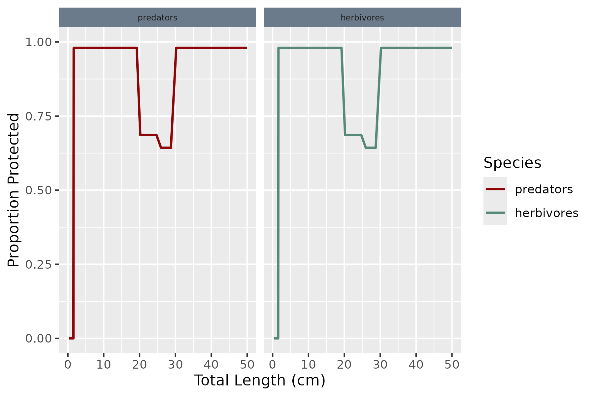

Overview
This page gives a mathematical description of the mizerReef model. mizerReef is an extension of mizer, and this page assumes that you are already familiar with the general mizer model. We use the same notation as in the mizer model description and concentrate on the places where mizerReef departs from or adds to core mizer. Everything not mentioned here (the size-spectrum dynamics, the shape of the predation kernel, the growth and reproduction machinery, the fishing model, and so on) is inherited unchanged from mizer.
mizerReef is designed for structurally complex habitats such as coral reefs. It adds four ingredients to the standard multispecies model:
- Predation refuge. Structural complexity lets some prey hide from some predators. This is captured by a size- and species-dependent vulnerability that discounts both the food a predator encounters and the predation mortality it inflicts.
- Unstructured resources. In addition to the size-structured resource spectrum (plankton), mizerReef tracks two non-size-structured benthic pools: algae with biomass and detritus with biomass .
- Satiation control. Individual consumer groups can be exempted from the Holling type II satiation response, so that carnivores take all the food they encounter.
- Senescence mortality. An extra size-dependent mortality term acting near a group’s maximum size, on top of the residual natural mortality.
Throughout, the index (or ) runs over the modelled functional groups rather than taxonomic species; in mizerReef the entries of are usually size spectra of feeding guilds.
State variables
A mizerReef model carries the same consumer spectra and resource spectrum as mizer, together with two additional scalar state variables:
- , the total biomass of algae (turf, macroalgae and the epilithic algal matrix), and
- , the total biomass of detritus (decomposing organic matter, faeces and material sinking in from the pelagic zone).
Neither pool is size-structured, reflecting the fact that reef
herbivores and detritivores feed on these resources largely
independently of their own body size. Their dynamics are given in the
section on unstructured
resource dynamics. They are stored as other components
of the model (n_other$algae and
n_other$detritus) and evolve alongside the fish and
plankton spectra.
Predation refuge and vulnerability
The central mechanism in mizerReef is that habitat structure shelters
prey from predators. We describe this with the
vulnerability
:
the proportion of individuals of prey group
at size
that are not hidden inside refuge and are therefore available
to be encountered and eaten by predator group
.
It is a dimensionless number between
and
,
computed by reefVulnerable() and returned by
getVulnerable().
Two group-level flags in the species parameter table decide who is affected:
-
refuge_usermarks the prey groups that seek shelter. Groups that never use refuge have for all predators and sizes. -
blocked_predmarks the predator groups whose foraging is obstructed by structure. A predator withblocked_pred = FALSE(for example an eel that can follow prey into a crevice) is unaffected by refuge and always sees .
Writing for the proportion of refuge-using prey group that are sheltered at size (the refuge profile, defined below), the vulnerability is Because the sheltering depends on the prey only, takes just two possible values for each prey group and size — the discounted value for blocked predators and for predators that can reach into refuge.
The refuge profile is capped at a maximum protection level,
(max_protect,
default
),
so that some food always remains accessible.
Refuge profiles
The refuge profile
is set with setRefuge(), which offers three ways to specify
it plus a trivial “no refuge” option. All three convert between length
and weight using length–weight parameters
and
(so that
), using either group-specific
values or a set of “dummy fish” values
,
depending on how the field data were collected.
Sigmoidal. A smooth decline in protection around a
threshold length
,
appropriate when the refuge-size distribution is unknown. With threshold
weight
,
where
(prop_protect) is the maximum proportion protected and
(slope) sets the sharpness of the transition.
Binned. A step function that is appropriate for theoretical experiments. On a set of length bins with weight edges , with a constant protected proportion in each bin.
Competitive. The mechanistic, density-dependent
option, used when the density of physical refuges is known. Let
be the density of refuges (number per m²) in size bin
.
These refuges are shared out among all refuge-using individuals whose
size falls in that bin, so the protected proportion is the ratio of
available refuges to competitors:
where the sum runs over all
refuge-using groups
and
(tau, default
)
is the fraction of individuals with access to a refuge that actually use
it. When there are no competitors the protection is set to
.
The competitive profile is the only one that couples back to the fish abundances: as a size class becomes crowded, the same number of refuges protect a smaller fraction of it, so vulnerability rises with density. This provides an additional, habitat-mediated source of density dependence that is recomputed at every time step. The static sigmoidal and binned profiles, by contrast, are fixed once set.

Refuge profile for the built-in Caribbean example model: the proportion protected by refuge as a function of body size for each functional group.
Habitat degradation
The competitive method also supports time-dependent loss of
structure, used to simulate bleaching or physical damage
(setDegradation(), reefDegrade()). The refuge
density is scaled forward in time by a sequence of factors: from a
bleaching time
onwards,
where the
are user-supplied scaling factors (the columns of
deg_scale) giving the fractional change in refuge density
in each successive year post-disturbance. Optionally the algal growth
rate and carrying capacity can be boosted over the same period to
represent the algal proliferation that often follows coral loss.
Encounter rate
The predation encounter rate has the same form as in mizer but with two modifications: prey abundances are discounted by their vulnerability, and the unstructured resources contribute additional, non-size-structured food.
For a predator of group
and weight
,
Compared with mizer, the fish-prey term
now carries the factor
,
which removes the sheltered fraction of each prey group from the food
available to predator
.
The plankton resource
is not affected by refuge. The search volume
,
interaction coefficients
,
and predation kernel
are exactly as in mizer, and the integral is evaluated by the same fast
Fourier transform when the kernel depends only on the predator/prey size
ratio. This rate is computed by reefEncounter().
The last two terms are the contributions from feeding on the
unstructured resources. Because these pools are not size-structured, the
encounter rate on each is simply proportional to its total biomass:
where
and
(interaction_algae, interaction_detritus) set
each group’s preference for algae and detritus, the coefficients
set the overall consumption power, and the allometric exponents
control how intake scales with consumer size. This contribution is added
through mizer’s standard component mechanism
(encounter_contribution()).
Consumption and satiation
As in mizer, encountered food is consumed subject to a Holling type II functional response, giving the feeding level where is the maximum intake rate. The proportion of encountered food is actually consumed, and the absorbed rate available for metabolism, growth and reproduction is .
mizerReef adds a per-group satiation switch
(satiation). Groups with satiation = FALSE
have no upper limit on their intake, formally
.
For them the feeding level collapses to
so they consume everything they
encounter and the absorbed rate is simply
.
This behaviour is implemented by reefFeedingLevel(), which
sets the maximum intake to infinity for non-satiating groups and treats
the resulting
feeding level as zero.
By default, only species that consume detritus but not algae
(i.e. pure detritivores/invertebrates) keep the type II response
(satiation = TRUE); carnivores and herbivores both default
to satiation = FALSE (see setRefuge()), since
satiation-mediated consumption is intended to be exclusive to
detritivory — see the Algae section below for the citations behind this
default for herbivores specifically. This is a default, not a hard rule:
caribbean_3_model and caribbean_10_model
(karpata) both override it to satiation = TRUE
for their herbivore/parrotfish groups, because recalibrating those
models against the corrected senescence-mortality formula showed
herbivore biomass has no density-dependent brake at all without some cap
on individual intake once mortality is realistically low (see
inst/scripts/Caribbean_3_model-calibration.R‘s design note
for the full reasoning) — the underlying “herbivores don’t reduce
grazing pressure on the shared algae pool” claim these citations support
is unaffected by this, since algae_consumption() (the
resource-depletion rate) deliberately ignores feeding level regardless
of any species’ satiation setting.
Growth and reproduction
The partitioning of absorbed energy into metabolism, growth and reproduction is unchanged from mizer. After metabolic losses , the rate available for growth and reproduction is a fraction of which goes to reproduction and the remainder to somatic growth, . Reproduction uses the same egg-production integral and the same emergent Beverton–Holt stock–recruitment relationship as mizer. See the mizer model description for details.
Mortality
The total mortality on a consumer of group
and weight
is
computed by reefMort().
Fishing mortality
is exactly as in mizer. The remaining three terms differ from core mizer
as follows.
Predation mortality
All food eaten becomes predation mortality on the prey, but only the
vulnerable, non-sheltered individuals can be eaten. The predation
mortality on prey group
at size
is
where
is the same predation rate as in mizer (computed from predator
’s
feeding). The extra factor
discounts the contribution of each predator
by the fraction of prey
that is exposed to it: predators that are blocked by refuge
(blocked_pred = TRUE) only prey on the
fraction that is out in the open, while predators that can reach into
refuge apply the full mortality. This is computed by
reefPredMort().
Residual natural mortality
Mortality from sources not modelled explicitly (predators outside the
model, disease, and so on) is taken to be allometric in size,
with
the rate at
g (nat_mort, default
)
and
the growth exponent. This is mizerReef’s external mortality
and plays the same role as
in mizer.
Senescence mortality
To represent death from old age near a group’s maximum size,
mizerReef adds a size-increasing senescence term
(reefSenMort(), getSenMort()):
with the ratio floored at zero for
g. Here
is the maximum weight of group
,
(sen_prop) is the rate the curve approaches as
(where the ratio is exactly 1), and
(sen_curve) controls the steepness with which mortality
climbs as individuals approach their maximum size. Senescence mortality
is included only when the model is set up to use it; both it and the
residual natural mortality are configured through
setExtMortParams().
Unstructured resource dynamics
The algae and detritus pools each obey a linear balance between
production and consumption. Because they are single scalars, their
dynamics are ordinary differential equations that mizerReef solves
analytically over each time step of length
,
which avoids the numerical instability of an explicit Euler step. The
general mathematical form of these dynamics – a linear production/
consumption balance for each unstructured pool, solved analytically each
time step – was adapted from the mizerShelf extension package (Delius et al. 2022, de Juan et al. 2023). This is not a direct
port, though: mizerShelf represents its detritus/carrion pools by
rescaling the total biomass of mizer’s size-structured background
resource spectrum, whereas mizerReef’s algae and detritus are genuinely
unstructured scalar pools with their own dedicated species- and
size-dependent encounter-rate matrices
(),
added as independent components via setComponent().
mizerReef also adds coral-reef-specific behaviour with no equivalent in
mizerShelf, most notably that algae production is treated as a fixed
rate of primary production decoupled from consumer demand rather than
tuned to match consumption (see algae_consumption()’s
documentation for the ecological rationale and citations).
Algae
The algal biomass follows
where
is the production rate. Unlike detritus, algal production on a reef is
real primary production and is not driven by grazer demand, so
is a fixed, literature-informed constant
(getAlgaeProduction(), see setAlgaeParams())
rather than something tuned to match consumption; instead it is the
algae biomass
that is solved for at steady state
(tuneUR()/tuneUR_cc()), so that, all else
equal, a decrease in grazing pressure increases the standing algae
biomass rather than reducing modelled production to compensate.
is the mass-specific consumption rate
(algae_consumption()). The latter is the total rate at
which consumers graze the pool per unit of algal biomass,
so that the total grazing rate is
.
Note that, unlike detritus consumption below, this deliberately does
not include a feeding-level factor: in mizerReef,
satiation-mediated consumption is exclusive to detritivory. Increases in
herbivorous fish density following coral bleaching events suggest that
reef herbivores respond to increased food availability without
regulating their consumption (Ledlie et al. 2007,
Pratchett et al. 2008, Khalil et al. 2013, Elma et al. 2023), and
Caribbean herbivores have been observed to fill their gut up to three
times a day (Ferreira et al. 1998, Kopp et al.
2010). Algal consumption is therefore modelled as driven by
continuous grazing pressure regardless of the satiation
setting for the herbivore species involved – see
algae_consumption()’s documentation for more detail. Over a
step the equation integrates to
Detritus
Detritus obeys the same form,
with mass-specific consumption
(detritus_consumption()).
Unlike algae, detritus is produced by several processes in the
ecosystem, and its production rate is the sum of three contributions
(getDetritusProduction()):
- Faeces — the fraction of consumed biomass that is not assimilated:
-
Decomposing carcasses — a fraction of the biomass
lost to residual natural and senescence mortality:
where
(
ext_decomp) and (sen_decomp) are the proportions of each mortality source that decompose to detritus rather than being exported. -
External input
— a constant rate at which detritus enters from unmodelled sources such
as sponges, coral mucus and pelagic sinking (
external), set to close the steady-state budget.
Carrying-capacity variant
For scenarios in which the benthos saturates, both pools can instead
be given logistic production (setURcapacity(),
algae_dynamics_cc(), detritus_dynamics_cc()):
with carrying capacity
.
This too is solved analytically over each step,
and reduces to the linear case as
.
Summary of differences from mizer
| Process | mizer | mizerReef |
|---|---|---|
| Prey availability | full abundance | discounted by vulnerability |
| Encounter | plankton + fish | plankton + fish + algae + detritus |
| Satiation | all groups | optional; off for carnivores |
| External mortality | constant | plus senescence |
| Extra resources | resource spectrum only | plus unstructured pools , |
For how these equations are realised through mizer’s extension
mechanism (S3 dispatch, NextMethod() chaining and
registered components), see the extension mechanism vignette.